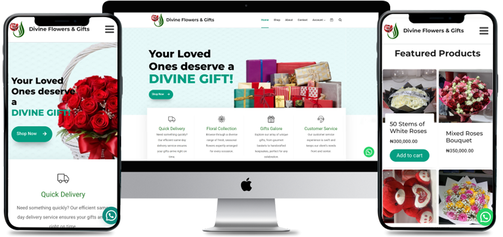

Portfolio Details



E-commerce Website for Divine Flowers and Gifts
The project commenced with a detailed ideation phase where the business goals and target audience of Divine Flowers and Gifts were thoroughly analyzed. I engaged in brainstorming sessions to understand the brand's unique selling points and the user experience we aimed to deliver. This foundational understanding shaped the vision for a seamless and visually appealing e-commerce platform.
The next stage involved sketching out wireframes and low-fidelity mockups to outline the core structure and navigation flow of the website. I focused on optimizing user journeys, ensuring that the checkout process, product listings, and information pages were intuitive and accessible. These sketches were then validated with stakeholders to confirm alignment with business goals. The design phase incorporated the brand’s elegance and charm, blending vibrant floral imagery with smooth navigation elements. I employed Bootstrap 5 for a responsive layout, AOS for engaging animations, and Swiper for interactive image galleries. The color palette and typography were selected to reflect the brand’s luxury and quality.
Export tempor illum tamen malis malis eram quae irure esse labore quem cillum quid cillum eram malis quorum velit fore eram velit sunt aliqua noster fugiat irure amet legam anim culpa.

Sara Wilsson
Designer
During prototyping, I used interactive design tools to simulate the user experience, allowing for real-time feedback and adjustments. This step was crucial for identifying bottlenecks and optimizing load times, especially for image-heavy sections. User testing was performed to refine the interface and ensure flawless navigation across devices.
The final stage was deployment, where the site was launched with secure payment integrations, real-time inventory updates, and SEO optimization for better online visibility. Continuous monitoring and updates were also established to maintain performance and user satisfaction.
Technologies Used:
- WordPress
- Figma
- Photoshop
Project information
- Category Web Development
- ClientDivine Flowers and Gifts Company
- Project date 01 March, 2020
- Project URL www.divineflowersngifts.com
- Visit Website